← 返回阅读库 · 原论文目录
论文讲解阅读文档 · 论文精读 · v253
真王回归！！！DeepSeek系列最全回顾！无缝衔接V4！
视频时长 00:22:10；讲解文字 8,375 字符；提取讲解画面 440 张。按视频原顺序阅读，每段文字保留时间戳。
文字来自整段视频的自动语音转写，按自然停顿分段，并与 PPT / 论文页面 / 演示画面对齐。未将讲解压缩为摘要；术语、数字和口述公式请结合画面及原论文核对。 阅读稿已校正规范部分明确术语误识别；原始逐字稿和每处修改记录另行保留。
讲解画面为源视频截图（640×360），不是可编辑 PPT 文件。全片按每秒 2 帧扫描内容变化，逐步展开页保留；连续动画保留代表画面。清晰度受源视频限制。
下载完整资料包 · 含离线 HTML、PDF、Word、全部 PPT 画面和字幕。
原论文与材料
DeepSeekMoE: Towards Ultimate Expert Specialization in Mixture-of-Experts Language Models · 下载完整 PDF（33 页）
DeepSeek-V2: A Strong, Economical, and Efficient Mixture-of-Experts Language Model · 下载完整 PDF（52 页）
DeepSeek-R1: Incentivizing Reasoning Capability in LLMs via Reinforcement Learning · 下载完整 PDF（86 页）
DeepSeek-V3 Technical Report · 下载完整 PDF（53 页）
DeepSeek-V3.2: Pushing the Frontier of Open Large Language Models · 下载完整 PDF（23 页）
DeepSeek-V4: Towards Highly Efficient Million-Token Context Intelligence · 下载完整 PDF（58 页）
DeepSeek LLM: Scaling Open-Source Language Models with Longtermism · 下载完整 PDF（48 页）
按时间阅读
00:00:00–00:00:02 · 画面 001
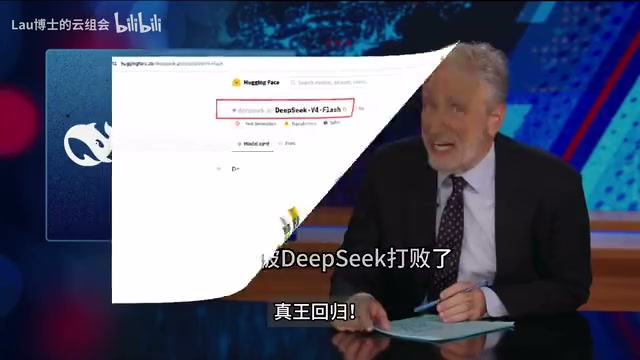
00:00:00–00:00:02 · 画面 001真王回归，Deep Seek V4 终于终于发布了。今天六博士端上一盘大菜，尽万智代理回顾 Deep Seek 的眼镜之路。即便你从未关注过 Deep Seek，也可以通过本期节目无缝衔接 V4 的最新技术。
00:00:02–00:00:06 · 画面 002
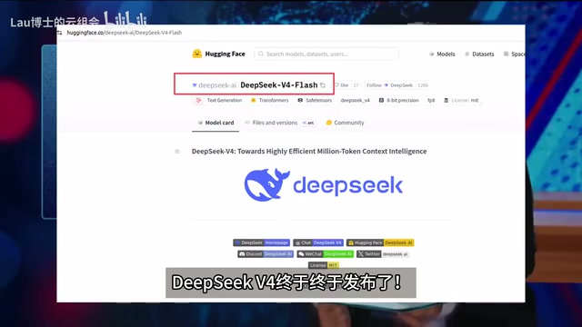
00:00:02–00:00:06 · 画面 00200:00:06–00:00:10 · 画面 003
00:00:06–00:00:10 · 画面 00300:00:10–00:00:14 · 画面 004
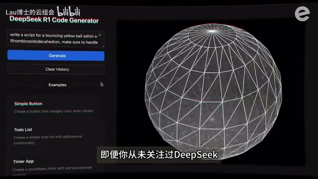
00:00:10–00:00:14 · 画面 00400:00:14–00:00:18 · 画面 005
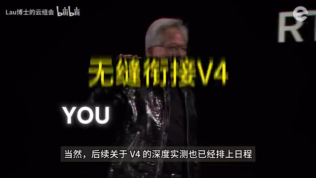
00:00:14–00:00:18 · 画面 005当然，后续关于 V4 的深度实测也已经排上了日程。你在看节目的同时，我就在疯狂爆肝。做这么多不为别的，只为换你手中的两个硬币，不过分吧。视频较长，点赞收藏方便回看。接下来一起进入本期云组会。时间回到 2024 年初，那时候 AI 圈很热闹但也很焦虑。OpenAI 的 GPT 系列实力最强，很难追赶。
00:00:18–00:00:22 · 画面 006
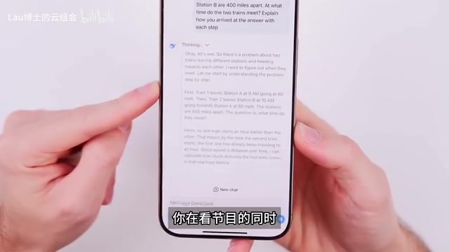
00:00:18–00:00:22 · 画面 00600:00:22–00:00:23 · 画面 007
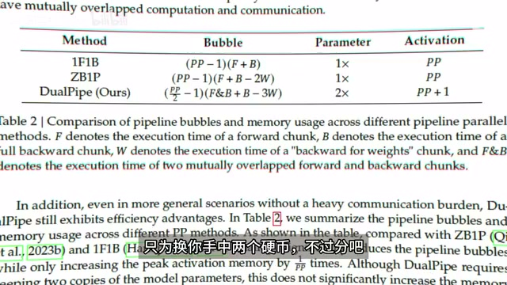
00:00:22–00:00:23 · 画面 00700:00:23–00:00:27 · 画面 008
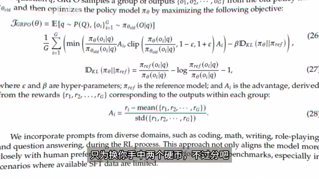
00:00:23–00:00:27 · 画面 00800:00:27–00:00:31 · 画面 009
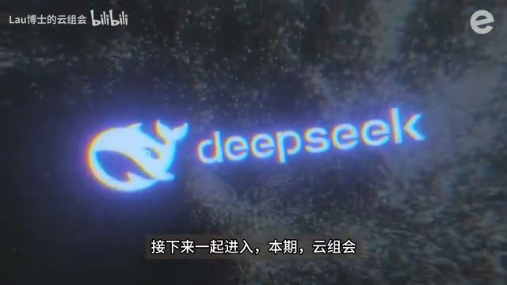
00:00:27–00:00:31 · 画面 00900:00:31–00:00:35 · 画面 010
00:00:31–00:00:35 · 画面 01000:00:35–00:00:38 · 画面 011
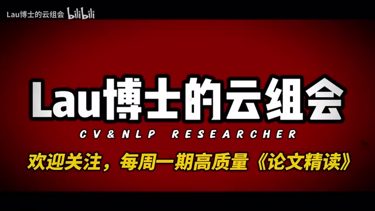
00:00:35–00:00:38 · 画面 01100:00:38–00:00:42 · 画面 012
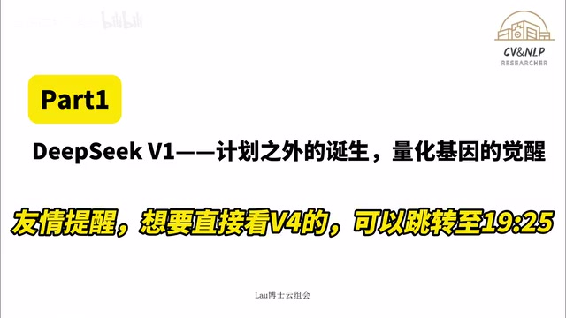
00:00:38–00:00:42 · 画面 01200:00:42–00:00:46 · 画面 013
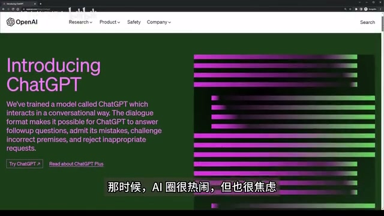
00:00:42–00:00:46 · 画面 01300:00:46–00:00:47 · 画面 014
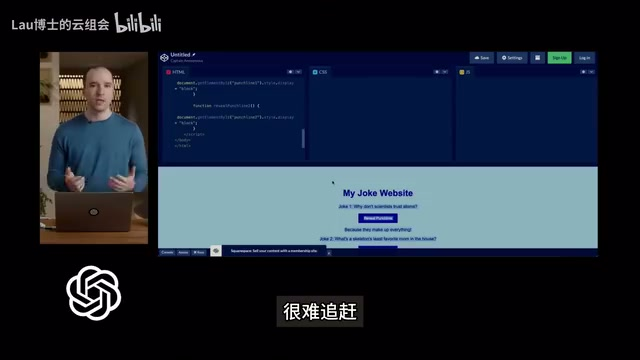
00:00:46–00:00:47 · 画面 014Meta 的 Llama 系列是开源社区的标杆，大家都在用。很多团队都在做模型，但大多数团队都是在做微调。大家在现有的基础上修修补补，真正敢从零开始预训练一个大模型的团队寥寥无几。高昂的成本，未知的风险，太多的不确定性，让很多人望而却步。但 Deep Seek 团队选择了最难的一条路。故事的主角是梁文峰。
00:00:47–00:00:51 · 画面 015
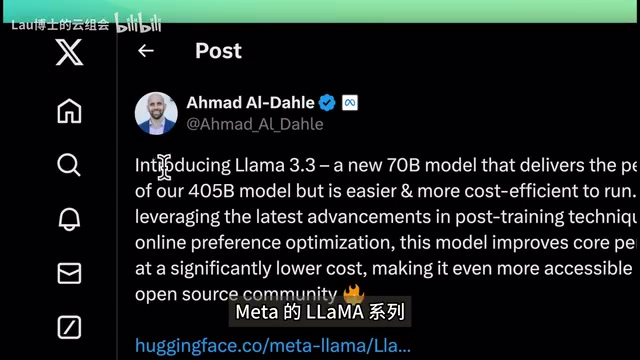
00:00:47–00:00:51 · 画面 01500:00:51–00:00:55 · 画面 016
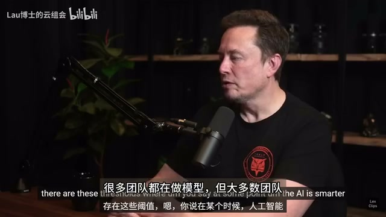
00:00:51–00:00:55 · 画面 01600:00:55–00:00:59 · 画面 017
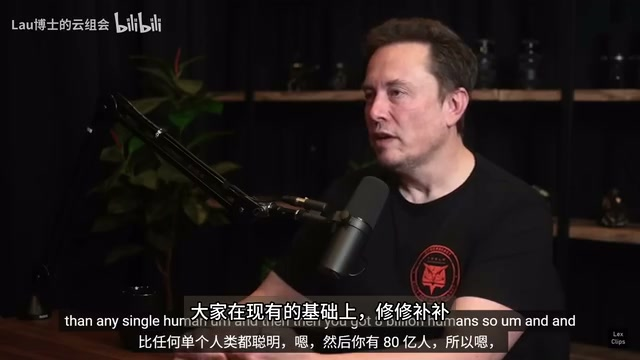
00:00:55–00:00:59 · 画面 01700:00:59–00:01:03 · 画面 018
00:00:59–00:01:03 · 画面 01800:01:03–00:01:07 · 画面 019
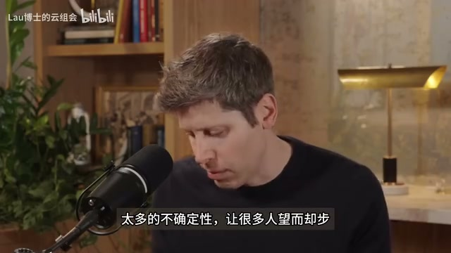
00:01:03–00:01:07 · 画面 01900:01:07–00:01:10 · 画面 020
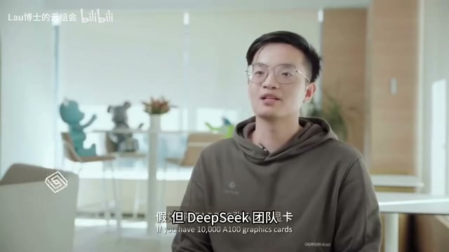
00:01:07–00:01:10 · 画面 02000:01:10–00:01:14 · 画面 021
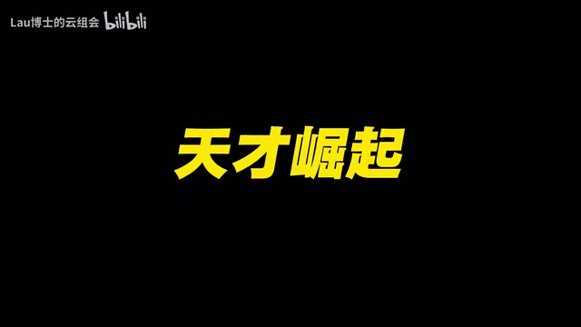
00:01:10–00:01:14 · 画面 021这位出生于 1985 年的年轻人来自广东湛江武传市的一个普通家庭，父母都是老师。从小他便展露出了在数学方面的过人禀赋，初中时他已经自学完了高中数学，甚至开始研究大学微积分。2002 年，17 岁的他以当地高考状元的身份考入浙江大学。命运的转折点出现在了 2008 年全球金融危机爆发，正在攻读硕士学位的梁文峰敏锐的发现
00:01:14–00:01:18 · 画面 022
00:01:14–00:01:18 · 画面 02200:01:18–00:01:22 · 画面 023
00:01:18–00:01:22 · 画面 02300:01:22–00:01:26 · 画面 024
00:01:22–00:01:26 · 画面 02400:01:26–00:01:30 · 画面 025
00:01:26–00:01:30 · 画面 02500:01:30–00:01:34 · 画面 026
00:01:30–00:01:34 · 画面 02600:01:34–00:01:38 · 画面 027
00:01:34–00:01:38 · 画面 02700:01:38–00:01:42 · 画面 028
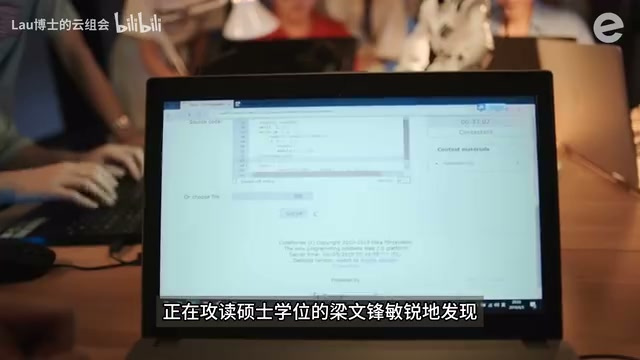
00:01:38–00:01:42 · 画面 028传统投资策略失败，而机器学习可能成为破局关键。他带领团队探索用 AI 预测市场走向，开发出国内较早的量化交易模型。到 2010 年毕业时，这个模型已经为他赚到了人生的第一桶金，积累了可观的财富。后来他创办了幻方科技，这家公司逐步成为量化投资界的知名机构。
00:01:42–00:01:46 · 画面 029
00:01:42–00:01:46 · 画面 02900:01:46–00:01:50 · 画面 030
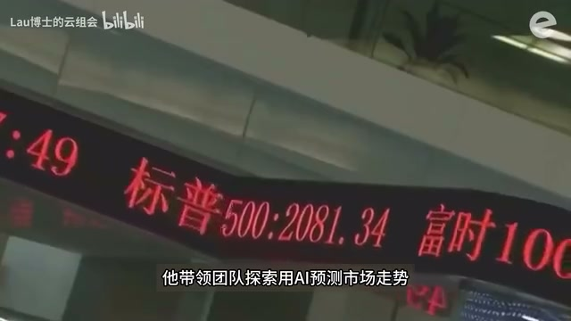
00:01:46–00:01:50 · 画面 03000:01:50–00:01:54 · 画面 031
00:01:50–00:01:54 · 画面 03100:01:54–00:01:58 · 画面 032
00:01:54–00:01:58 · 画面 03200:01:58–00:02:02 · 画面 033
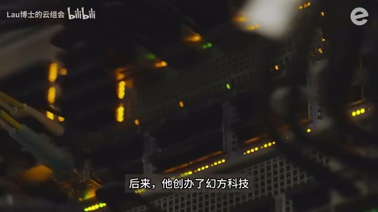
00:01:58–00:02:02 · 画面 03300:02:02–00:02:06 · 画面 034
00:02:02–00:02:06 · 画面 034当 2023 年 ChatGPT 火爆全球时，梁文峰做了一个决定。他将目光投向通用人工智能，投入资源创立了 DeepSeek。这背后是量化基因对 AI 的深刻理解。在金融市场上，幻方早就习惯了用算力换优势。当时，
00:02:06–00:02:10 · 画面 035
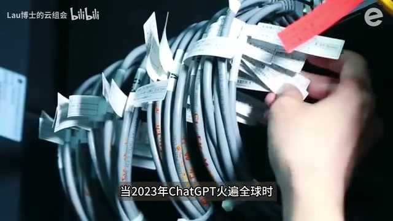
00:02:06–00:02:10 · 画面 03500:02:10–00:02:14 · 画面 036
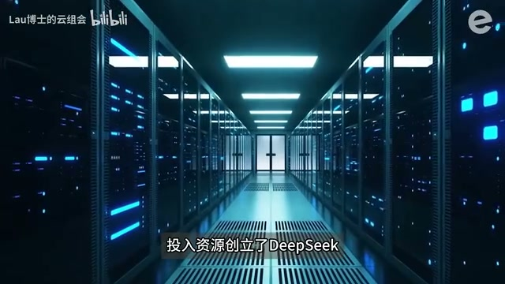
00:02:10–00:02:14 · 画面 03600:02:14–00:02:18 · 画面 037
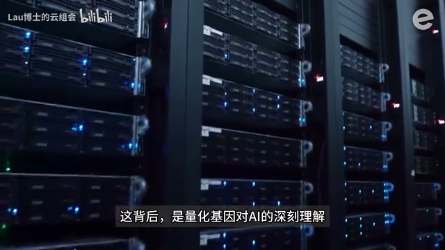
00:02:14–00:02:18 · 画面 03700:02:18–00:02:22 · 画面 038
00:02:18–00:02:22 · 画面 038他们手中握着一张王牌，萤火超级计算机集群。2019 年换番自主研发萤火 1 号，耗资约 2 亿元。2021 年又投入了约 10 亿元建造了萤火 2 号，其规模相当于一个篮球场，搭载了约 1 万张英伟达 A100 显卡。这套原本用于量化交易的算力系统后来成为了 DeepSeek 最坚实的后盾。
00:02:22–00:02:26 · 画面 039
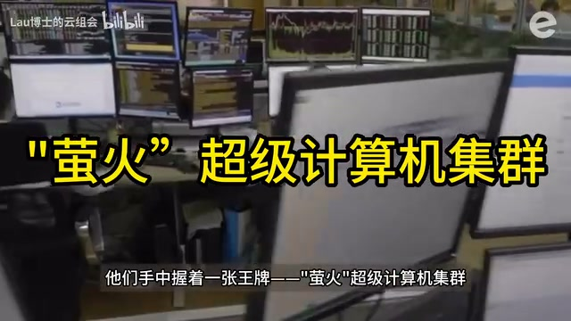
00:02:22–00:02:26 · 画面 03900:02:26–00:02:30 · 画面 040
00:02:26–00:02:30 · 画面 04000:02:30–00:02:34 · 画面 041
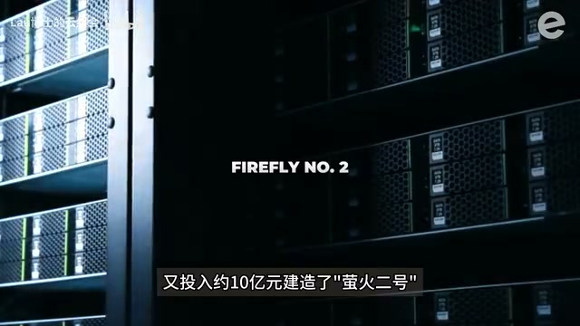
00:02:30–00:02:34 · 画面 04100:02:34–00:02:38 · 画面 042
00:02:34–00:02:38 · 画面 04200:02:38–00:02:42 · 画面 043
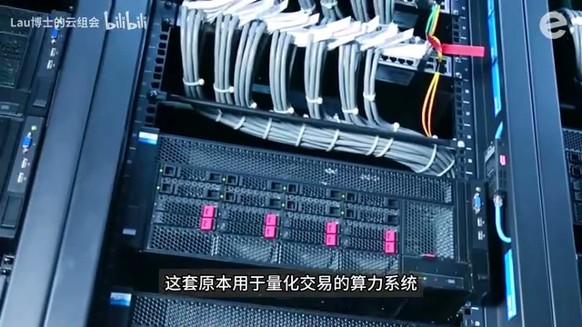
00:02:38–00:02:42 · 画面 04300:02:42–00:02:46 · 画面 044
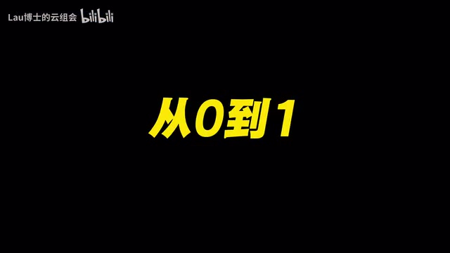
00:02:42–00:02:46 · 画面 044换方决定从头训练，他们要验证开源模型的上限到底在哪里。于是 DeepSeek LLM 也就是我们常说的 VE 版本诞生了。这份诞生记后来被写进了论文标题里，带着一个词，长期主义。在这个阶段，DeepSeek 做了一件非常硬核的事情，他们没有盲目的堆数据，他们先研究了缩放定律。这是什么意思呢？简单来说就是研究模型大小、数据量和计算力之间的关系。
00:02:46–00:02:48 · 画面 045
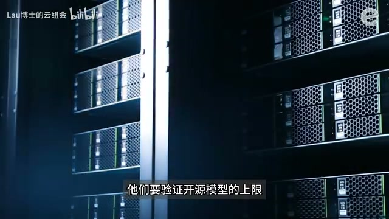
00:02:46–00:02:48 · 画面 04500:02:48–00:02:49 · 画面 046
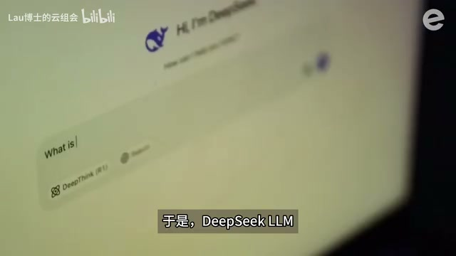
00:02:48–00:02:49 · 画面 04600:02:49–00:02:52 · 画面 047
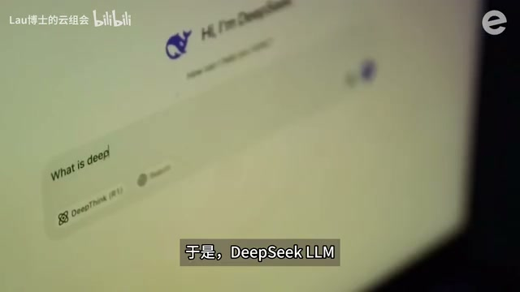
00:02:49–00:02:52 · 画面 04700:02:52–00:02:57 · 画面 048
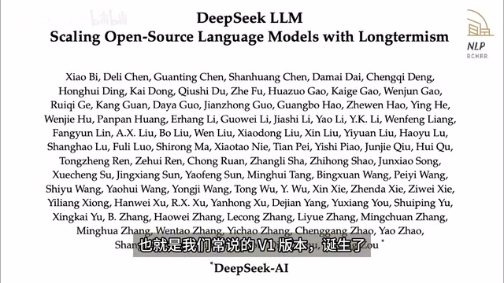
00:02:52–00:02:57 · 画面 04800:02:57–00:03:01 · 画面 049
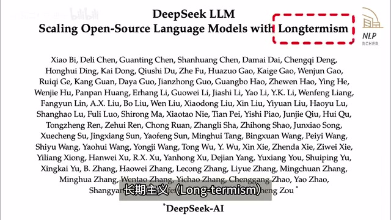
00:02:57–00:03:01 · 画面 04900:03:01–00:03:05 · 画面 050
00:03:01–00:03:05 · 画面 05000:03:05–00:03:07 · 画面 051
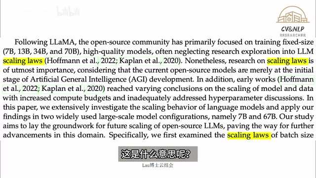
00:03:05–00:03:07 · 画面 05100:03:07–00:03:11 · 画面 052
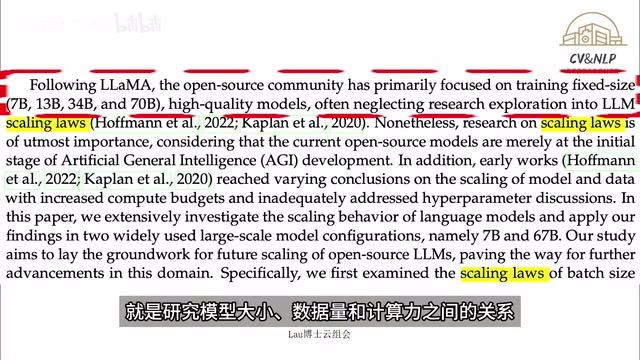
00:03:07–00:03:11 · 画面 052以前的研究结论并不统一，有的说数据更重要，有的说模型更大更好。DeepSeek 团队决定自己算一遍，通过大量的实验发现不同的数据集缩放定律的表现是不一样的，高质量的数据能让模型更小但性能更强。这个发现为他们后来的成功埋下了伏笔，基于这个研究他们构建了 2 万亿 Token 的高质量数据集
00:03:11–00:03:18 · 画面 053
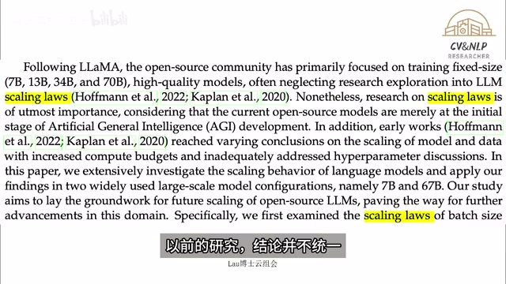
00:03:11–00:03:18 · 画面 05300:03:18–00:03:19 · 画面 054
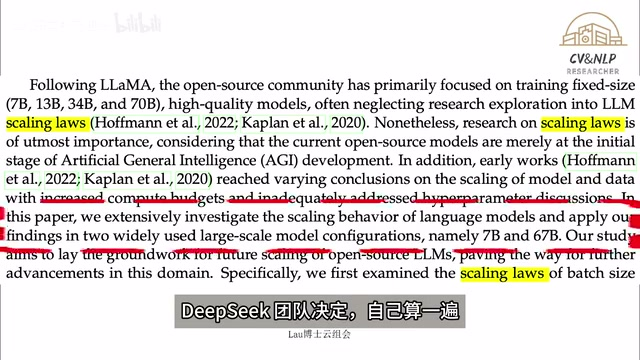
00:03:18–00:03:19 · 画面 05400:03:19–00:03:21 · 画面 055
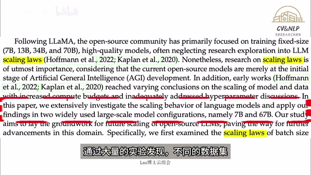
00:03:19–00:03:21 · 画面 05500:03:21–00:03:24 · 画面 056
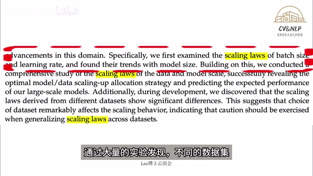
00:03:21–00:03:24 · 画面 05600:03:24–00:03:26 · 画面 057
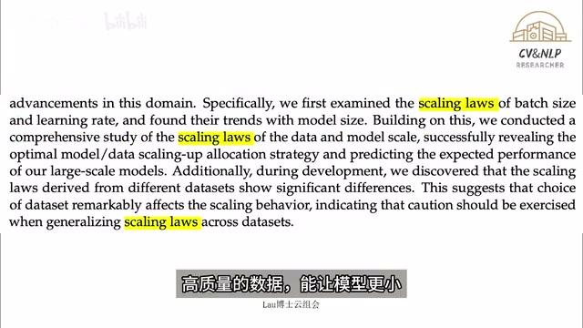
00:03:24–00:03:26 · 画面 05700:03:26–00:03:30 · 画面 058
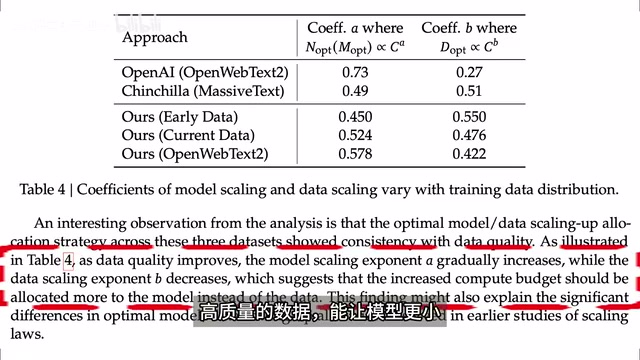
00:03:26–00:03:30 · 画面 05800:03:30–00:03:33 · 画面 059
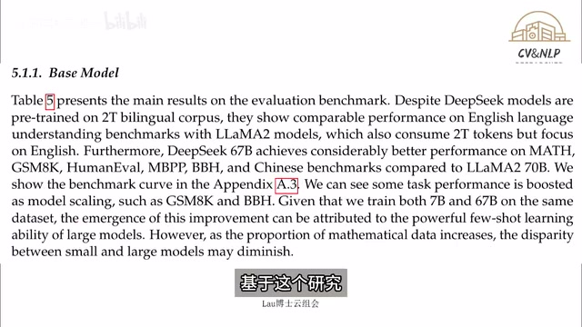
00:03:30–00:03:33 · 画面 05900:03:33–00:03:37 · 画面 060
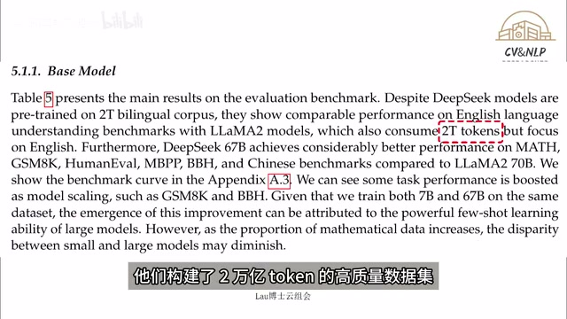
00:03:33–00:03:37 · 画面 060此外，他们推出的 7B 和 67B 两个版本的基座模型，在当时的开源社区，67B 是一个敏感的参数规模，因为 Llama-2 的 70B 模型是当时的王者。DeepSeek 67B 敢不敢碰一碰？
00:03:37–00:03:42 · 画面 061
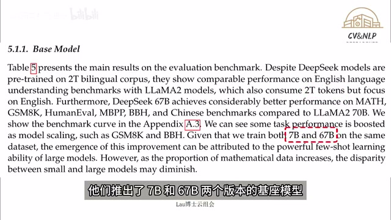
00:03:37–00:03:42 · 画面 06100:03:42–00:03:43 · 画面 062
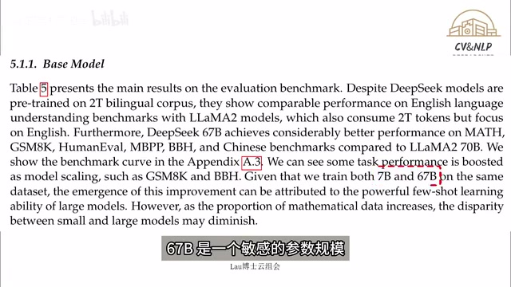
00:03:42–00:03:43 · 画面 06200:03:43–00:03:48 · 画面 063
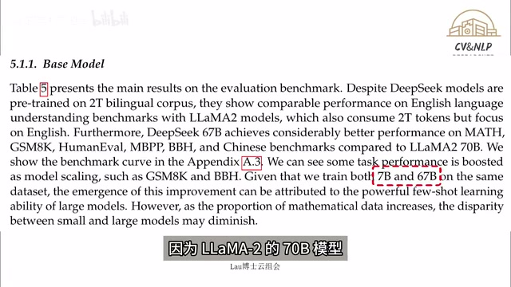
00:03:43–00:03:48 · 画面 06300:03:48–00:03:49 · 画面 064
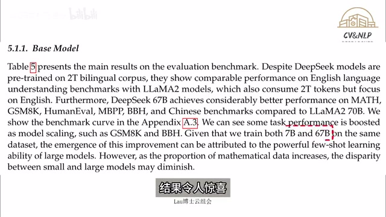
00:03:48–00:03:49 · 画面 064结果令人惊喜，在代码能力上，DeepSync 67B 超越了 Llama-2 70B。在数学推理上，DeepSync 67B 也取得了优势。这意味着什么？这意味着在硬核的理性任务上，开源模型已经具备了挑战顶尖闭源模型的潜力。当然，光有基座模型还不够，用户需要的是能对话的助手。于是 DeepSync 进行了监督微调，也就是 SFT。
00:03:49–00:03:51 · 画面 065
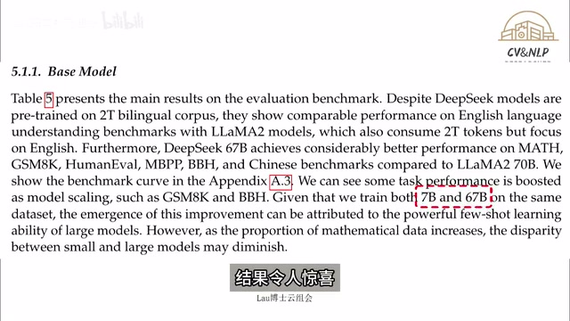
00:03:49–00:03:51 · 画面 06500:03:51–00:03:55 · 画面 066
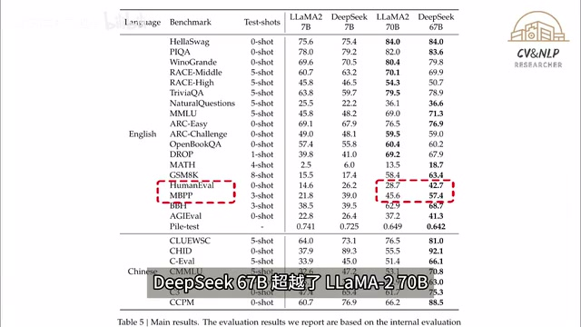
00:03:51–00:03:55 · 画面 06600:03:55–00:03:56 · 画面 067
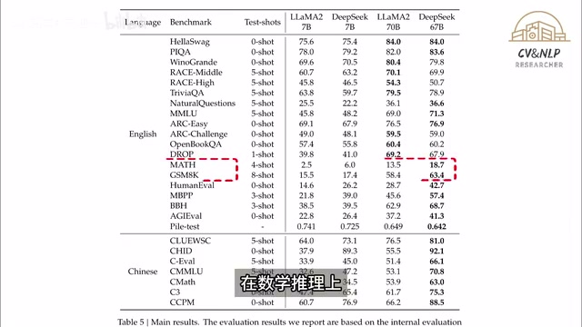
00:03:55–00:03:56 · 画面 06700:03:56–00:04:01 · 画面 068
00:03:56–00:04:01 · 画面 06800:04:01–00:04:02 · 画面 069
00:04:01–00:04:02 · 画面 06900:04:02–00:04:06 · 画面 070
00:04:02–00:04:06 · 画面 07000:04:06–00:04:07 · 画面 071
00:04:06–00:04:07 · 画面 07100:04:07–00:04:09 · 画面 072
00:04:07–00:04:09 · 画面 07200:04:09–00:04:12 · 画面 073
00:04:09–00:04:12 · 画面 07300:04:12–00:04:15 · 画面 074
00:04:12–00:04:15 · 画面 074它们还引入了 DPO 也就是直接电耗优化这样模型更懂人类的意图在开放式评估中 DeepSync 67B 聊天版本当中表现甚至超过了 GPT 3.5 但这只是开始 DeepSync 团队很清楚 VE 版本虽然不错但架构上还是传统的 Transformer
00:04:15–00:04:17 · 画面 075
00:04:15–00:04:17 · 画面 07500:04:17–00:04:20 · 画面 076
00:04:17–00:04:20 · 画面 07600:04:20–00:04:21 · 画面 077
00:04:20–00:04:21 · 画面 07700:04:21–00:04:25 · 画面 078
00:04:21–00:04:25 · 画面 07800:04:25–00:04:29 · 画面 079
00:04:25–00:04:29 · 画面 07900:04:29–00:04:33 · 画面 080
00:04:29–00:04:33 · 画面 080随着模型变大，推理成本会急剧上升，显存的占用会越来越大，速度会越来越慢。如果想让大模型真正的普及，必须解决效率问题。量化出生的，他们对成本和效率有着天然的敏感。于是他们把目光投向了更深层的架构创新。这场革命就是 Dixit V2。
00:04:33–00:04:35 · 画面 081
00:04:33–00:04:35 · 画面 08100:04:35–00:04:50 · 画面 082
00:04:35–00:04:50 · 画面 08200:04:50–00:04:53 · 画面 083
00:04:50–00:04:53 · 画面 08300:04:53–00:04:54 · 画面 084
00:04:53–00:04:54 · 画面 084那我们把时间轴播到 2024 年中，这时候大模型竞赛已经进入了白热化，大家都在拼参数、拼数据量。但 DeepSeek 团队发现，单纯的堆参数编辑效应在递减，而且推理的成本太高了，高到普通的开发者根本用不起。怎么解决？答案是 Moe 混合专家模型。Moe 这个概念其实早就有了，它的核心思想是树叶有专攻。
00:04:54–00:04:57 · 画面 085
00:04:54–00:04:57 · 画面 08500:04:57–00:04:59 · 画面 086
00:04:57–00:04:59 · 画面 08600:04:59–00:05:03 · 画面 087
00:04:59–00:05:03 · 画面 08700:05:03–00:05:04 · 画面 088
00:05:03–00:05:04 · 画面 08800:05:04–00:05:06 · 画面 089
00:05:04–00:05:06 · 画面 08900:05:06–00:05:09 · 画面 090
00:05:06–00:05:09 · 画面 09000:05:09–00:05:13 · 画面 091
00:05:09–00:05:13 · 画面 09100:05:13–00:05:15 · 画面 092
00:05:13–00:05:15 · 画面 09200:05:15–00:05:19 · 画面 093
00:05:15–00:05:19 · 画面 093传统的模型每次处理一个 Token 都要动用所有的参数，就像是一个公司不管遇到什么小事都要所有的员工一起开会决定，这显然效率很低。MOE 模型不一样，它把模型分成了很多个专家，每次来一个任务，路由网络会判断这个任务需要哪几个专家来处理，于是只有少部分参数被激活，大部分参数都在休息
00:05:19–00:05:21 · 画面 094
00:05:19–00:05:21 · 画面 09400:05:21–00:05:23 · 画面 095
00:05:21–00:05:23 · 画面 09500:05:23–00:05:25 · 画面 096
00:05:23–00:05:25 · 画面 09600:05:25–00:05:26 · 画面 097
00:05:25–00:05:26 · 画面 09700:05:26–00:05:30 · 画面 098
00:05:26–00:05:30 · 画面 09800:05:30–00:05:31 · 画面 099
00:05:30–00:05:31 · 画面 09900:05:31–00:05:34 · 画面 100
00:05:31–00:05:34 · 画面 10000:05:34–00:05:35 · 画面 101
00:05:34–00:05:35 · 画面 10100:05:35–00:05:36 · 画面 102
00:05:35–00:05:36 · 画面 10200:05:36–00:05:39 · 画面 103
00:05:36–00:05:39 · 画面 10300:05:39–00:05:41 · 画面 104
00:05:39–00:05:41 · 画面 10400:05:41–00:05:43 · 画面 105
00:05:41–00:05:43 · 画面 105这样做的好处显而易见，懂参数量可以很大，保证模型得知识容量，但每次计算激活的参数量很少，保证推理的速度。
00:05:43–00:05:46 · 画面 106
00:05:43–00:05:46 · 画面 10600:05:46–00:05:48 · 画面 107
00:05:46–00:05:48 · 画面 10700:05:48–00:05:49 · 画面 108
00:05:48–00:05:49 · 画面 10800:05:49–00:05:52 · 画面 109
00:05:49–00:05:52 · 画面 109但是 MOE 也有缺点，传统的 MOE 架构通信开销很大，因为专家可能分布在不同的显卡上，数据传来传去，时间都浪费在路上了，而且负载不均衡，有的专家累死，有的专家闲死。DeepSeek V2 就是为了解决这些问题而来的。DeepSeek V2 总参数量达到了 2360 亿，这是一个庞大的数字。
00:05:52–00:05:54 · 画面 110
00:05:52–00:05:54 · 画面 11000:05:54–00:05:55 · 画面 111
00:05:54–00:05:55 · 画面 11100:05:55–00:05:56 · 画面 112
00:05:55–00:05:56 · 画面 11200:05:56–00:05:57 · 画面 113
00:05:56–00:05:57 · 画面 11300:05:57–00:06:00 · 画面 114
00:05:57–00:06:00 · 画面 11400:06:00–00:06:01 · 画面 115
00:06:00–00:06:01 · 画面 11500:06:01–00:06:03 · 画面 116
00:06:01–00:06:03 · 画面 11600:06:03–00:06:04 · 画面 117
00:06:03–00:06:04 · 画面 11700:06:04–00:06:05 · 画面 118
00:06:04–00:06:05 · 画面 11800:06:05–00:06:07 · 画面 119
00:06:05–00:06:07 · 画面 11900:06:07–00:06:10 · 画面 120
00:06:07–00:06:10 · 画面 12000:06:10–00:06:15 · 画面 121
00:06:10–00:06:15 · 画面 121但是每次激活的参数只有 210 亿这是什么概念呢?这意味着它拥有千亿模型的智力却只有百亿模型的计算成本为了实现这一点 DeepSeq 引入了两项核心技术
00:06:15–00:06:17 · 画面 122
00:06:15–00:06:17 · 画面 12200:06:17–00:06:19 · 画面 123
00:06:17–00:06:19 · 画面 12300:06:19–00:06:20 · 画面 124
00:06:19–00:06:20 · 画面 12400:06:20–00:06:22 · 画面 125
00:06:20–00:06:22 · 画面 12500:06:22–00:06:24 · 画面 126
00:06:22–00:06:24 · 画面 12600:06:24–00:06:26 · 画面 127
00:06:24–00:06:26 · 画面 12700:06:26–00:06:33 · 画面 128
00:06:26–00:06:33 · 画面 128传统的 MOE 专家力度比较粗，DeepSeq 把专家切分得更细，细力度的专家能更精准的捕捉到知识，同时他们隔离了一部分共享专家，这些共享专家每次都会被激活，这保证了模型的基础能力不会丢失。为了解决负载不均衡的问题，DeepSeq 设计了设备限制路由，简单来说就是限制每个 Token 只能发送到有限数量的设备上，这样既保证了专家的
00:06:33–00:06:34 · 画面 129
00:06:33–00:06:34 · 画面 12900:06:34–00:06:38 · 画面 130
00:06:34–00:06:38 · 画面 13000:06:38–00:06:41 · 画面 131
00:06:38–00:06:41 · 画面 13100:06:41–00:06:45 · 画面 132
00:06:41–00:06:45 · 画面 13200:06:45–00:06:48 · 画面 133
00:06:45–00:06:48 · 画面 13300:06:48–00:06:53 · 画面 134
00:06:48–00:06:53 · 画面 13400:06:53–00:06:55 · 画面 135
00:06:53–00:06:55 · 画面 13500:06:55–00:06:59 · 画面 136
00:06:55–00:06:59 · 画面 136专业性，又控制了通信成本。
00:06:59–00:07:00 · 画面 137
00:06:59–00:07:00 · 画面 13700:07:00–00:07:01 · 画面 138
00:07:00–00:07:01 · 画面 138这是 DeepSync V2 最亮眼的创新之一。我们知道 Transformer 模型在生成文本时需要缓存 Key 和 Value 的矩阵，这就是 KV 缓存。随着生成长度的增加，KV 缓存会占用大量的显存，这限制了上下文长度，也限制了并发量。传统的优化方法比如 GQA 或是 MQA 虽然减少了 KV 缓存，但往往会牺牲性能。DeepSync 团队不想妥协，他们想既要性能又要效率。
00:07:01–00:07:04 · 画面 139
00:07:01–00:07:04 · 画面 13900:07:04–00:07:09 · 画面 140
00:07:04–00:07:09 · 画面 14000:07:09–00:07:10 · 画面 141
00:07:09–00:07:10 · 画面 14100:07:10–00:07:15 · 画面 142
00:07:10–00:07:15 · 画面 14200:07:15–00:07:17 · 画面 143
00:07:15–00:07:17 · 画面 14300:07:17–00:07:21 · 画面 144
00:07:17–00:07:21 · 画面 14400:07:21–00:07:23 · 画面 145
00:07:21–00:07:23 · 画面 14500:07:23–00:07:27 · 画面 146
00:07:23–00:07:27 · 画面 14600:07:27–00:07:28 · 画面 147
00:07:27–00:07:28 · 画面 14700:07:28–00:07:30 · 画面 148
00:07:28–00:07:30 · 画面 148MLA 的做法非常的巧妙它对 Key 和 Value 进行了低质联合压缩简单来说就是把庞大的 KV 矩阵压缩成一个很小的潜在向量在推理时只缓存这个潜在向量等到需要计算注意力时再把它还原回来这样做 KV 缓存减少了 93.3%这是一个惊人的数字
00:07:30–00:07:32 · 画面 149
00:07:30–00:07:32 · 画面 14900:07:32–00:07:34 · 画面 150
00:07:32–00:07:34 · 画面 15000:07:34–00:07:36 · 画面 151
00:07:34–00:07:36 · 画面 15100:07:36–00:07:40 · 画面 152
00:07:36–00:07:40 · 画面 15200:07:40–00:07:42 · 画面 153
00:07:40–00:07:42 · 画面 15300:07:42–00:07:45 · 画面 154
00:07:42–00:07:45 · 画面 15400:07:45–00:07:50 · 画面 155
00:07:45–00:07:50 · 画面 155这意味着同样的显存你可以处理更长的上下文或者你可以服务更多的用户而且 MLA 并没有损失性能在多项的基准测试中 DeepSync V2 表现甚至优于标准的 MHA 架构除了架构 DeepSync V2 在训练数据上也下了功夫他们用了 8.1T 的高质量 Token
00:07:50–00:07:51 · 画面 156
00:07:50–00:07:51 · 画面 15600:07:51–00:07:55 · 画面 157
00:07:51–00:07:55 · 画面 15700:07:55–00:08:00 · 画面 158
00:07:55–00:08:00 · 画面 15800:08:00–00:08:01 · 画面 159
00:08:00–00:08:01 · 画面 15900:08:01–00:08:03 · 画面 160
00:08:01–00:08:03 · 画面 16000:08:03–00:08:07 · 画面 161
00:08:03–00:08:07 · 画面 16100:08:07–00:08:08 · 画面 162
00:08:07–00:08:08 · 画面 16200:08:08–00:08:09 · 画面 163
00:08:08–00:08:09 · 画面 163其中中文数据的比例有所提升，这样模型在中文的理解上更加地地道。在评测结果上，DeepSeek V2 再次证明了实力。在两项的数学测试中，它超越了 Llama3 70B。更重要的是，它的训练成本降低了 42.5%生成的吞吐量提升了 5.76 倍。这对于开源社区来说是一个巨大的福音。它意味着高性能不再意味着高门槛，但 DeepSeek 的脚步没有停下。
00:08:09–00:08:12 · 画面 164
00:08:09–00:08:12 · 画面 16400:08:12–00:08:14 · 画面 165
00:08:12–00:08:14 · 画面 16500:08:14–00:08:17 · 画面 166
00:08:14–00:08:17 · 画面 16600:08:17–00:08:19 · 画面 167
00:08:17–00:08:19 · 画面 16700:08:19–00:08:20 · 画面 168
00:08:19–00:08:20 · 画面 16800:08:20–00:08:38 · 画面 169
00:08:20–00:08:38 · 画面 169他们知道 V2 虽然高效，但在极致的性能上还有提升空间，尤其是在面对 GPT-4 这样的闭源巨头时，开源模型还需要更强的底气。于是他们开始了下一次攀登，这一次目标是 6710 亿参数，目标是全面对标顶尖闭源模型。这就是 DeepSeek V32024 年年底 DeepSeek V3 正式发布，这个消息在整个 AI 圈引起了震动。
00:08:38–00:08:42 · 画面 170
00:08:38–00:08:42 · 画面 17000:08:42–00:08:46 · 画面 171
00:08:42–00:08:46 · 画面 17100:08:46–00:08:50 · 画面 172
00:08:46–00:08:50 · 画面 17200:08:50–00:08:52 · 画面 173
00:08:50–00:08:52 · 画面 17300:08:52–00:08:54 · 画面 174
00:08:52–00:08:54 · 画面 17400:08:54–00:08:58 · 画面 175
00:08:54–00:08:58 · 画面 17500:08:58–00:09:02 · 画面 176
00:08:58–00:09:02 · 画面 176为什么?因为参数规模 DeepSeek V3 的总参数量达到了 6710 亿每次激活 370 亿参数这是一个什么量级?这已经进入了此前只有少数币源巨头才敢触碰的领域但是 DeepSeek V3 并不是简单的放大如果只是放大训练的成本将是天文数字 DeepSeek 必须解决效率问题他们必须在有限的预算内完成这个庞阳大陆的训练
00:09:02–00:09:03 · 画面 177
00:09:02–00:09:03 · 画面 17700:09:03–00:09:05 · 画面 178
00:09:03–00:09:05 · 画面 17800:09:05–00:09:06 · 画面 179
00:09:05–00:09:06 · 画面 17900:09:06–00:09:08 · 画面 180
00:09:06–00:09:08 · 画面 18000:09:08–00:09:12 · 画面 181
00:09:08–00:09:12 · 画面 18100:09:12–00:09:16 · 画面 182
00:09:12–00:09:16 · 画面 18200:09:16–00:09:18 · 画面 183
00:09:16–00:09:18 · 画面 18300:09:18–00:09:22 · 画面 184
00:09:18–00:09:22 · 画面 18400:09:22–00:09:26 · 画面 185
00:09:22–00:09:26 · 画面 18500:09:26–00:09:29 · 画面 186
00:09:26–00:09:29 · 画面 186这里我们要重点介绍 DeepSync V3 几个关键的技术突破。以前的模型训练主要用 BF16 或者是 FP32 精度，FP8 的精度更低，计算更快，显存占用更少。
00:09:29–00:09:33 · 画面 187
00:09:29–00:09:33 · 画面 18700:09:33–00:09:34 · 画面 188
00:09:33–00:09:34 · 画面 18800:09:34–00:09:37 · 画面 189
00:09:34–00:09:37 · 画面 18900:09:37–00:09:39 · 画面 190
00:09:37–00:09:39 · 画面 19000:09:39–00:09:43 · 画面 191
00:09:39–00:09:43 · 画面 191但是 FP8 的动态范围小，容易导致训练不稳定。很多团队尝试过 FP8 训练大模型，但往往以失败告终。DeepSeq V3 攻克了这个难题，他们设计了一套细腻度的量化策略，对于激活值，他们按 1x128 的 Tile 进行分组缩放，对于权重，他们按 128x128 的 Block 进行分组缩放，这样做能够很好的对异常值保证精度。
00:09:43–00:09:44 · 画面 192
00:09:43–00:09:44 · 画面 19200:09:44–00:09:47 · 画面 193
00:09:44–00:09:47 · 画面 19300:09:47–00:09:51 · 画面 194
00:09:47–00:09:51 · 画面 19400:09:51–00:09:56 · 画面 195
00:09:51–00:09:56 · 画面 19500:09:56–00:09:58 · 画面 196
00:09:56–00:09:58 · 画面 19600:09:58–00:10:00 · 画面 197
00:09:58–00:10:00 · 画面 19700:10:00–00:10:01 · 画面 198
00:10:00–00:10:01 · 画面 19800:10:01–00:10:03 · 画面 199
00:10:01–00:10:03 · 画面 19900:10:03–00:10:04 · 画面 200
00:10:03–00:10:04 · 画面 20000:10:04–00:10:07 · 画面 201
00:10:04–00:10:07 · 画面 201同时他们提高了累加精度，在 Tensor Core 进行矩阵乘法时，中间的结果用低精度，但累加时 ProMotion 到 Cuda Core 进行高精度累加，这解决了低精度累加带来的误差累积的问题。得益于 FP8 的训练，DeepSync V3 的训练速度大幅提升，显存的占用也显著的降低，这使得训练 6711 参数的模型成为可能。
00:10:07–00:10:12 · 画面 202
00:10:07–00:10:12 · 画面 20200:10:12–00:10:13 · 画面 203
00:10:12–00:10:13 · 画面 20300:10:13–00:10:16 · 画面 204
00:10:13–00:10:16 · 画面 20400:10:16–00:10:18 · 画面 205
00:10:16–00:10:18 · 画面 20500:10:18–00:10:23 · 画面 206
00:10:18–00:10:23 · 画面 20600:10:23–00:10:24 · 画面 207
00:10:23–00:10:24 · 画面 20700:10:24–00:10:29 · 画面 208
00:10:24–00:10:29 · 画面 20800:10:29–00:10:30 · 画面 209
00:10:29–00:10:30 · 画面 20900:10:30–00:10:32 · 画面 210
00:10:30–00:10:32 · 画面 21000:10:32–00:10:36 · 画面 211
00:10:32–00:10:36 · 画面 211传统的语言模型一次只预测下一个 TokenDeepSeek V3 在训练时不仅预测了下一个 Token，还预测下下个 Token，这增加了训练信号的密度，模型能更好的规划未来的表示。
00:10:36–00:10:40 · 画面 212
00:10:36–00:10:40 · 画面 21200:10:40–00:10:42 · 画面 213
00:10:40–00:10:42 · 画面 21300:10:42–00:10:46 · 画面 214
00:10:42–00:10:46 · 画面 214虽然推理时主要的模型可以独立工作，但这个多 Token 的预测模块可以用于投机采样，这能进一步加速推理的速度。实测显示解码的速度提升了 1.8 倍。在 MOE 模型中负载均衡很重要，传统的方法是用辅助损失函数强迫模型平衡负载，但这会干扰主任务的学习，影响性能。DeepSeq V3 提出了一种新方法。
00:10:46–00:10:47 · 画面 215
00:10:46–00:10:47 · 画面 21500:10:47–00:10:49 · 画面 216
00:10:47–00:10:49 · 画面 21600:10:49–00:10:52 · 画面 217
00:10:49–00:10:52 · 画面 21700:10:52–00:10:53 · 画面 218
00:10:52–00:10:53 · 画面 21800:10:53–00:10:55 · 画面 219
00:10:53–00:10:55 · 画面 21900:10:55–00:10:56 · 画面 220
00:10:55–00:10:56 · 画面 22000:10:56–00:10:58 · 画面 221
00:10:56–00:10:58 · 画面 22100:10:58–00:11:00 · 画面 222
00:10:58–00:11:00 · 画面 22200:11:00–00:11:03 · 画面 223
00:11:00–00:11:03 · 画面 22300:11:03–00:11:07 · 画面 224
00:11:03–00:11:07 · 画面 22400:11:07–00:11:09 · 画面 225
00:11:07–00:11:09 · 画面 22500:11:09–00:11:12 · 画面 226
00:11:09–00:11:12 · 画面 226它们给每个专家引入了一个偏置项，在路由时加上这个偏置，如果某个专家过载就减少偏置，如果欠载就增加偏置，这样不需要辅助损失就能实现负载均衡。实验证明这种策略比传统的辅助损失的方法性能更好。在基础设施方面，DigSeq 也做了大量的优化，它们设计了 DualPipe 算法，这是一种双向流水线的并行策略，它们更好的重叠计算和通讯。对于跨节点的 all-to-all 的通信，它们
00:11:12–00:11:14 · 画面 227
00:11:12–00:11:14 · 画面 22700:11:14–00:11:15 · 画面 228
00:11:14–00:11:15 · 画面 22800:11:15–00:11:20 · 画面 229
00:11:15–00:11:20 · 画面 22900:11:20–00:11:22 · 画面 230
00:11:20–00:11:22 · 画面 23000:11:22–00:11:26 · 画面 231
00:11:22–00:11:26 · 画面 23100:11:26–00:11:30 · 画面 232
00:11:26–00:11:30 · 画面 23200:11:30–00:11:33 · 画面 233
00:11:30–00:11:33 · 画面 23300:11:33–00:11:34 · 画面 234
00:11:33–00:11:34 · 画面 23400:11:34–00:11:36 · 画面 235
00:11:34–00:11:36 · 画面 23500:11:36–00:11:37 · 画面 236
00:11:36–00:11:37 · 画面 23600:11:37–00:11:40 · 画面 237
00:11:37–00:11:40 · 画面 237更高效的 Kernel 充分利用了 Infiniband 和 NVLink 的带宽。
00:11:40–00:11:42 · 画面 238
00:11:40–00:11:42 · 画面 23800:11:42–00:11:44 · 画面 239
00:11:42–00:11:44 · 画面 239这些工程优化使得 DeepSync V3 的训练极其稳定。在整个训练过程中没有出现不可恢复的损失尖峰，也没有进行过任何的回滚。最终 DeepSync V3 的训练成本是多少？全文训练仅用了 278.8 万 H800 GPU 小时，折合约 557.6 万美元。这是一个极具竞争力的成本。相比之下，训练了类似规模的闭元模型，比如 GPT-4 成本去传高达了 1 亿美元。
00:11:44–00:11:47 · 画面 240
00:11:44–00:11:47 · 画面 24000:11:47–00:11:52 · 画面 241
00:11:47–00:11:52 · 画面 24100:11:52–00:11:54 · 画面 242
00:11:52–00:11:54 · 画面 24200:11:54–00:11:58 · 画面 243
00:11:54–00:11:58 · 画面 24300:11:58–00:12:00 · 画面 244
00:11:58–00:12:00 · 画面 24400:12:00–00:12:02 · 画面 245
00:12:00–00:12:02 · 画面 24500:12:02–00:12:04 · 画面 246
00:12:02–00:12:04 · 画面 24600:12:04–00:12:06 · 画面 247
00:12:04–00:12:06 · 画面 24700:12:06–00:12:12 · 画面 248
00:12:06–00:12:12 · 画面 248DeepSeek 用不到 600 万美元做到了变 1 亿美元的效果这就是小米家步枪打败飞机大炮的故事那么性能如何呢?
00:12:12–00:12:15 · 画面 249
00:12:12–00:12:15 · 画面 24900:12:15–00:12:19 · 画面 250
00:12:15–00:12:19 · 画面 25000:12:19–00:12:23 · 画面 251
00:12:19–00:12:23 · 画面 251在知识类的基准测试中，DeepSync V3 超越了所有的开源模型，在 MMLU 上得分 88.5，在代码和数学方面，DeepSync V3 更是表现出色，在 Live Code Bench 上面它是表现最好的开源模型。在中文能力上，DeepSync V3 展现了本土优势。DeepSync V3 的发布标志着开源模型进入了一个新阶段，它证明了通过架构创新和工程优化，开源模型可以在性能上媲美闭源模型。
00:12:23–00:12:26 · 画面 252
00:12:23–00:12:26 · 画面 25200:12:26–00:12:27 · 画面 253
00:12:26–00:12:27 · 画面 25300:12:27–00:12:29 · 画面 254
00:12:27–00:12:29 · 画面 25400:12:29–00:12:31 · 画面 255
00:12:29–00:12:31 · 画面 25500:12:31–00:12:33 · 画面 256
00:12:31–00:12:33 · 画面 25600:12:33–00:12:35 · 画面 257
00:12:33–00:12:35 · 画面 25700:12:35–00:12:39 · 画面 258
00:12:35–00:12:39 · 画面 25800:12:39–00:12:41 · 画面 259
00:12:39–00:12:41 · 画面 25900:12:41–00:12:43 · 画面 260
00:12:41–00:12:43 · 画面 26000:12:43–00:12:47 · 画面 261
00:12:43–00:12:47 · 画面 26100:12:47–00:12:51 · 画面 262
00:12:47–00:12:51 · 画面 262同时还能保持极高的性价比。但是 DeepSeek 团队并没有满足于此，他们发现虽然 V3 很强，但在复杂的推理任务上，模型还是倾向于直觉反应，它缺乏深度的思考过程，它不能像人类专家一样一步步推导自我验证。为了解决这个问题，DeepSeek 开启了一个全新的项目，这个项目不再仅仅是预训练，它聚焦于后训练，聚焦于强化学习，这就是 DeepSeek R1。
00:12:51–00:12:54 · 画面 263
00:12:51–00:12:54 · 画面 26300:12:54–00:12:58 · 画面 264
00:12:54–00:12:58 · 画面 26400:12:58–00:13:02 · 画面 265
00:12:58–00:13:02 · 画面 26500:13:02–00:13:04 · 画面 266
00:13:02–00:13:04 · 画面 26600:13:04–00:13:09 · 画面 267
00:13:04–00:13:09 · 画面 26700:13:09–00:13:12 · 画面 268
00:13:09–00:13:12 · 画面 26800:13:12–00:13:14 · 画面 269
00:13:12–00:13:14 · 画面 26900:13:14–00:13:16 · 画面 270
00:13:14–00:13:16 · 画面 27000:13:16–00:13:20 · 画面 271
00:13:16–00:13:20 · 画面 271如果说 V3 是力量的展示，那么 R1 就是智慧的觉醒。DeSic R1 的发布是 2025 年初 AI 圈最轰动的事件，为什么，因为它解决了一个核心痛点。
00:13:20–00:13:24 · 画面 272
00:13:20–00:13:24 · 画面 27200:13:24–00:13:26 · 画面 273
00:13:24–00:13:26 · 画面 27300:13:26–00:13:27 · 画面 274
00:13:26–00:13:27 · 画面 27400:13:27–00:13:29 · 画面 275
00:13:27–00:13:29 · 画面 275大模型虽然知识渊博，但往往缺乏逻辑推理能力。面对复杂的数学题或是复杂的代码调试，模型容易胡说八道。以前的方法是靠 supervised fine-tuning，也就是监督微调，人类写好推理的步骤让模型模仿，但这种方法有局限性，人类的推理步骤未必是最优的，而且标注的成本太高。
00:13:29–00:13:31 · 画面 276
00:13:29–00:13:31 · 画面 27600:13:31–00:13:34 · 画面 277
00:13:31–00:13:34 · 画面 27700:13:34–00:13:35 · 画面 278
00:13:34–00:13:35 · 画面 27800:13:35–00:13:36 · 画面 279
00:13:35–00:13:36 · 画面 27900:13:36–00:13:38 · 画面 280
00:13:36–00:13:38 · 画面 28000:13:38–00:13:42 · 画面 281
00:13:38–00:13:42 · 画面 28100:13:42–00:13:44 · 画面 282
00:13:42–00:13:44 · 画面 28200:13:44–00:13:48 · 画面 283
00:13:44–00:13:48 · 画面 28300:13:48–00:13:50 · 画面 284
00:13:48–00:13:50 · 画面 284D-SIC R1 选择了一条不同的路，它们使用强化学习直接激励模型产生推理能力。这里我们要重点介绍 D-SIC R1-0，这是一个实验性的模型，它没有任何的 supervised 微调，它直接基于基座模型进行纯强化学习训练。
00:13:50–00:13:55 · 画面 285
00:13:50–00:13:55 · 画面 28500:13:55–00:13:56 · 画面 286
00:13:55–00:13:56 · 画面 28600:13:56–00:13:58 · 画面 287
00:13:56–00:13:58 · 画面 28700:13:58–00:13:59 · 画面 288
00:13:58–00:13:59 · 画面 28800:13:59–00:14:02 · 画面 289
00:13:59–00:14:02 · 画面 28900:14:02–00:14:06 · 画面 290
00:14:02–00:14:06 · 画面 290奖励的信号非常简单，模型怎么思考不管，只要答案对就给奖励。神奇的事情发生了，随着训练的进行，模型开始自发的产生复杂的推理行为。它学会了自我反思，它学会了验证步骤，它学会了遇到死胡同时回溯并尝试新的路径。在训练日之中，研究人员观察到了一个起点时刻。
00:14:06–00:14:08 · 画面 291
00:14:06–00:14:08 · 画面 29100:14:08–00:14:11 · 画面 292
00:14:08–00:14:11 · 画面 29200:14:11–00:14:15 · 画面 293
00:14:11–00:14:15 · 画面 29300:14:15–00:14:16 · 画面 294
00:14:15–00:14:16 · 画面 29400:14:16–00:14:21 · 画面 295
00:14:16–00:14:21 · 画面 29500:14:21–00:14:22 · 画面 296
00:14:21–00:14:22 · 画面 29600:14:22–00:14:23 · 画面 297
00:14:22–00:14:23 · 画面 29700:14:23–00:14:27 · 画面 298
00:14:23–00:14:27 · 画面 298模型开始频繁的使用等等让我重新检查一下这样的词汇这标志着模型内部形成了某种监督机制在 AIME2024 数学竞赛测试中 DeepSeq R1-Zero 的通过率从 15.6%飙升到了 77.9%如果结合自依自信解码准确率能达到 86.7%这个成绩超过了大多数人类参赛者
00:14:27–00:14:29 · 画面 299
00:14:27–00:14:29 · 画面 29900:14:29–00:14:32 · 画面 300
00:14:29–00:14:32 · 画面 30000:14:32–00:14:35 · 画面 301
00:14:32–00:14:35 · 画面 30100:14:35–00:14:38 · 画面 302
00:14:35–00:14:38 · 画面 30200:14:38–00:14:40 · 画面 303
00:14:38–00:14:40 · 画面 30300:14:40–00:14:44 · 画面 304
00:14:40–00:14:44 · 画面 30400:14:44–00:14:47 · 画面 305
00:14:44–00:14:47 · 画面 30500:14:47–00:14:51 · 画面 306
00:14:47–00:14:51 · 画面 306当然 R1Zero 也有问题，它的可读性差，有时候会混合中英文，而且它只在推理任务上强，通用能力较弱。于是 DeepSeek 推出了完整的 DeepSeek R1，这是一个多阶段训练的模型。首先它们收集了少量的人启动数据，这些数据包含了人类对齐的思维链，这样模型学会了基本的对话格式，然后进行强化学习训练。
00:14:51–00:14:53 · 画面 307
00:14:51–00:14:53 · 画面 30700:14:53–00:14:58 · 画面 308
00:14:53–00:14:58 · 画面 30800:14:58–00:14:59 · 画面 309
00:14:58–00:14:59 · 画面 30900:14:59–00:15:02 · 画面 310
00:14:59–00:15:02 · 画面 31000:15:02–00:15:04 · 画面 311
00:15:02–00:15:04 · 画面 31100:15:04–00:15:06 · 画面 312
00:15:04–00:15:06 · 画面 31200:15:06–00:15:08 · 画面 313
00:15:06–00:15:08 · 画面 31300:15:08–00:15:11 · 画面 314
00:15:08–00:15:11 · 画面 31400:15:11–00:15:15 · 画面 315
00:15:11–00:15:15 · 画面 31500:15:15–00:15:18 · 画面 316
00:15:15–00:15:18 · 画面 316这里使用了 GRPO 算法，这是一种高效的强化学习算法。在奖励设计上，除了准确性奖励，还加入了格式奖励，模型必须把推理过程放在特定的标签类，这方便后续分析。最后为了提升通用能力，他们又进行了一轮 Supervised 微调。这轮微调加入了非推理的数据，比如写作、问答，这样模型不仅会做题，还会聊天。
00:15:18–00:15:21 · 画面 317
00:15:18–00:15:21 · 画面 31700:15:21–00:15:23 · 画面 318
00:15:21–00:15:23 · 画面 31800:15:23–00:15:26 · 画面 319
00:15:23–00:15:26 · 画面 31900:15:26–00:15:28 · 画面 320
00:15:26–00:15:28 · 画面 32000:15:28–00:15:29 · 画面 321
00:15:28–00:15:29 · 画面 32100:15:29–00:15:31 · 画面 322
00:15:29–00:15:31 · 画面 32200:15:31–00:15:34 · 画面 323
00:15:31–00:15:34 · 画面 32300:15:34–00:15:35 · 画面 324
00:15:34–00:15:35 · 画面 32400:15:35–00:15:38 · 画面 325
00:15:35–00:15:38 · 画面 32500:15:38–00:15:42 · 画面 326
00:15:38–00:15:42 · 画面 326DSIC R1 的表现是现象级的在数学代码、科学推理任务上达到了业界的顶尖水平在 AIME 2020 上它取得了 79.8%的通过率
00:15:42–00:15:45 · 画面 327
00:15:42–00:15:45 · 画面 32700:15:45–00:15:49 · 画面 328
00:15:45–00:15:49 · 画面 32800:15:49–00:15:53 · 画面 329
00:15:49–00:15:53 · 画面 329在 Codeforces 的编程竞赛中它超越了 96.3%的人类选手更令人兴奋的是 R1 的推理能力可以蒸馏 DeepSeek 团队利用 R1 生成的数据训练了一系列小模型这些蒸馏的模型比如 1.5B、7B 版本性能远超同尺寸的传统模型
00:15:53–00:15:55 · 画面 330
00:15:53–00:15:55 · 画面 33000:15:55–00:15:58 · 画面 331
00:15:55–00:15:58 · 画面 33100:15:58–00:16:05 · 画面 332
00:15:58–00:16:05 · 画面 33200:16:05–00:16:06 · 画面 333
00:16:05–00:16:06 · 画面 33300:16:06–00:16:08 · 画面 334
00:16:06–00:16:08 · 画面 33400:16:08–00:16:11 · 画面 335
00:16:08–00:16:11 · 画面 33500:16:11–00:16:14 · 画面 336
00:16:11–00:16:14 · 画面 336这意味着强大的推理能力不再需要巨大的算力，手机端、边缘端都有可能运行具备深度思考能力的模型。DeSic R1 的成功验证了一个假设，推理能力是可以被激励出来的，不需要人类手把手教，只要给对奖励，模型自己能找到最优的解题路径。这为未来的 AI 发展指明了方向，我们不再需要穷尽所有人类的知识去训练模型。
00:16:14–00:16:18 · 画面 337
00:16:14–00:16:18 · 画面 33700:16:18–00:16:20 · 画面 338
00:16:18–00:16:20 · 画面 33800:16:20–00:16:21 · 画面 339
00:16:20–00:16:21 · 画面 33900:16:21–00:16:25 · 画面 340
00:16:21–00:16:25 · 画面 34000:16:25–00:16:29 · 画面 341
00:16:25–00:16:29 · 画面 34100:16:29–00:16:31 · 画面 342
00:16:29–00:16:31 · 画面 34200:16:31–00:16:33 · 画面 343
00:16:31–00:16:33 · 画面 34300:16:33–00:16:38 · 画面 344
00:16:33–00:16:38 · 画面 344我们需要设计的是更好的验证机制和更高效的强化学习框架。R1 的成功也让 DeepSync V3 系列有了更强的后盾。V3 提供了强大的肌肉能力，R1 提供了深度推理的灵魂。两者的结合催生了下一个版本，这就是 DeepSync V3.2。站在 V3 和 R1 的肩膀上，DeepSync V3.2 应运而生。DeepSync V3.1 主要验证了长上下纹的扩展能力。
00:16:38–00:16:42 · 画面 345
00:16:38–00:16:42 · 画面 34500:16:42–00:16:46 · 画面 346
00:16:42–00:16:46 · 画面 34600:16:46–00:16:50 · 画面 347
00:16:46–00:16:50 · 画面 34700:16:50–00:16:51 · 画面 348
00:16:50–00:16:51 · 画面 34800:16:51–00:16:54 · 画面 349
00:16:51–00:16:54 · 画面 34900:16:54–00:16:56 · 画面 350
00:16:54–00:16:56 · 画面 35000:16:56–00:17:00 · 画面 351
00:16:56–00:17:00 · 画面 35100:17:00–00:17:02 · 画面 352
00:17:00–00:17:02 · 画面 35200:17:02–00:17:06 · 画面 353
00:17:02–00:17:06 · 画面 353而根据最新的技术报告 V3.2 不仅仅是一个语言模型的升级它是一个面向 Agent 面向复杂任务处理的全面进化首先架构上有新的突破
00:17:06–00:17:09 · 画面 354
00:17:06–00:17:09 · 画面 35400:17:09–00:17:12 · 画面 355
00:17:09–00:17:12 · 画面 35500:17:12–00:17:13 · 画面 356
00:17:12–00:17:13 · 画面 35600:17:13–00:17:15 · 画面 357
00:17:13–00:17:15 · 画面 35700:17:15–00:17:19 · 画面 358
00:17:15–00:17:19 · 画面 358DeepSeq V3.2 引入了 DSA，也就是 DeepSeq 系数注意力。我们知道随着上下文变长，注意力机制的计算复杂度是平方级增长的，这限制了长文本的处理。DSA 通过一种高效的系数机制，大幅降低了计算复杂度。它保留了对关键 Token 的关注，忽略了无关的信息。这使得模型在上下文场景下依然保持高效。V3.2 的上下文长度稳定支持 128K。
00:17:19–00:17:20 · 画面 359
00:17:19–00:17:20 · 画面 35900:17:20–00:17:22 · 画面 360
00:17:20–00:17:22 · 画面 36000:17:22–00:17:25 · 画面 361
00:17:22–00:17:25 · 画面 36100:17:25–00:17:29 · 画面 362
00:17:25–00:17:29 · 画面 36200:17:29–00:17:34 · 画面 363
00:17:29–00:17:34 · 画面 36300:17:34–00:17:35 · 画面 364
00:17:34–00:17:35 · 画面 36400:17:35–00:17:40 · 画面 365
00:17:35–00:17:40 · 画面 36500:17:40–00:17:42 · 画面 366
00:17:40–00:17:42 · 画面 36600:17:42–00:17:47 · 画面 367
00:17:42–00:17:47 · 画面 367这意味着它可以一次性处理整本书或是长达数小时的会议记录。而且由于 DSA 的优化，推理成本并没有显著的增加。其次是强化学习框架的扩展。V3.2 继承了 R1 的强化学习成果，并将其扩展到了 A 准任务。什么是 A 准任务？就是让模型使用工具，比如搜索互联网，比如运行代码，比如操作数据库。
00:17:47–00:17:49 · 画面 368
00:17:47–00:17:49 · 画面 36800:17:49–00:17:53 · 画面 369
00:17:49–00:17:53 · 画面 36900:17:53–00:17:54 · 画面 370
00:17:53–00:17:54 · 画面 37000:17:54–00:17:59 · 画面 371
00:17:54–00:17:59 · 画面 37100:17:59–00:18:00 · 画面 372
00:17:59–00:18:00 · 画面 37200:18:00–00:18:02 · 画面 373
00:18:00–00:18:02 · 画面 37300:18:02–00:18:17 · 画面 374
00:18:02–00:18:17 · 画面 374以前的模型调用工具往往不稳定容易死循环或者参数错误 DeepSeek V3.2 建立了一个大规模的任务合成流水线它们生成超过 1800 个不同的环境和 85000 个复杂的提示词这些数据涵盖了搜索、代码工程、代码解释等多种场景
00:18:17–00:18:21 · 画面 375
00:18:17–00:18:21 · 画面 37500:18:21–00:18:23 · 画面 376
00:18:21–00:18:23 · 画面 37600:18:23–00:18:24 · 画面 377
00:18:23–00:18:24 · 画面 37700:18:24–00:18:26 · 画面 378
00:18:24–00:18:26 · 画面 37800:18:26–00:18:30 · 画面 379
00:18:26–00:18:30 · 画面 379通过这些数据上进行强化学习 V3.2 学会了如何在多步任务上规划它学会了何时调用工具何时进行思考在工具返回错误时如何调整策略在评测中 V3.2 的表现令人印象深刻在 Terminal Bench 2.0 上它的准确率达到了 46.4%在 SWE-bench Verified 上得分是 73.1%
00:18:30–00:18:41 · 画面 380
00:18:30–00:18:41 · 画面 38000:18:41–00:18:46 · 画面 381
00:18:41–00:18:46 · 画面 38100:18:46–00:18:47 · 画面 382
00:18:46–00:18:47 · 画面 38200:18:47–00:18:48 · 画面 383
00:18:47–00:18:48 · 画面 38300:18:48–00:18:51 · 画面 384
00:18:48–00:18:51 · 画面 38400:18:51–00:18:52 · 画面 385
00:18:51–00:18:52 · 画面 385这些成绩显著超越了其他开源模型甚至在某些指标上超越了闭源模型特别值得一提的是 DeepSync V3.2 Special
00:18:52–00:19:09 · 画面 386
00:18:52–00:19:09 · 画面 386这是一个高计算量的变体，它放松了长度限制，允许模型进行更长时间的思考。在 2025 年的国际数学奥林匹克竞赛中，Special 的版本获得了金牌成绩。在国际信息学奥林匹克竞赛中，它也获得了金牌。这标志着开源模型在顶级的智力竞赛中已经具备了夺牌的实力。开源生态将因此变得更加繁荣，也让大家更加期待 DeepSick V4 的发布。
00:19:09–00:19:11 · 画面 387
00:19:09–00:19:11 · 画面 38700:19:11–00:19:14 · 画面 388
00:19:11–00:19:14 · 画面 38800:19:14–00:19:15 · 画面 389
00:19:14–00:19:15 · 画面 38900:19:15–00:19:19 · 画面 390
00:19:15–00:19:19 · 画面 39000:19:19–00:19:21 · 画面 391
00:19:19–00:19:21 · 画面 39100:19:21–00:19:25 · 画面 392
00:19:21–00:19:25 · 画面 39200:19:25–00:19:28 · 画面 393
00:19:25–00:19:28 · 画面 393等急了吧，终于到 V4 了。先问大家一个问题，今年最热的 AI 方向是什么？毫无疑问是 Agent。前段时间爆火的龙虾也是一种 Agent。其实在 V4 之前，DeepSeek 就已经默默发了很多论文，包括 M 管的记忆系统，提升吞吐量的 DualPath，还有 MOE 2.0，本质上都在为常上下文、高吞吐、高通可消耗的 Agent 做准备。
00:19:28–00:19:31 · 画面 394
00:19:28–00:19:31 · 画面 39400:19:31–00:19:35 · 画面 395
00:19:31–00:19:35 · 画面 39500:19:35–00:19:39 · 画面 396
00:19:35–00:19:39 · 画面 39600:19:39–00:19:43 · 画面 397
00:19:39–00:19:43 · 画面 39700:19:43–00:19:47 · 画面 398
00:19:43–00:19:47 · 画面 39800:19:47–00:19:51 · 画面 399
00:19:47–00:19:51 · 画面 399而这一次 DeepSync V4 也带着实时级更新来了直接甩出双版本王炸 Pro 版 1.6T 参数激活 49B 推理支持 Azure 能力浪漫编程竞赛数学推理碾压移动开源模型
00:19:51–00:19:57 · 画面 400
00:19:51–00:19:57 · 画面 40000:19:57–00:19:58 · 画面 401
00:19:57–00:19:58 · 画面 40100:19:58–00:20:02 · 画面 402
00:19:58–00:20:02 · 画面 40200:20:02–00:20:05 · 画面 403
00:20:02–00:20:05 · 画面 403在 Agentic Coding 的评测中 V4 Pro 已达到了当前开源模型的最佳水平并在其他 Agent 相关的评测中同样表现优异目前 DeepSync V4 已经成为了 DeepSync 内部员工使用的 Agentic Coding 的模型据评测反馈使用的体验优于 Sonnet 4.5 交付的质量接近 Oper 4.6 的非思考模式
00:20:05–00:20:13 · 画面 404
00:20:05–00:20:13 · 画面 40400:20:13–00:20:17 · 画面 405
00:20:13–00:20:17 · 画面 40500:20:17–00:20:21 · 画面 406
00:20:17–00:20:21 · 画面 40600:20:21–00:20:25 · 画面 407
00:20:21–00:20:25 · 画面 40700:20:25–00:20:27 · 画面 408
00:20:25–00:20:27 · 画面 408在世界知识的评测中大幅领先其他的开源模型，仅骚讯于顶尖闭元模型 Gemini Pro 3.1。在数学 STEM 竞赛型代码的测评中，DeepSync V4 Pro 超越了当前所有已公开评测的开源模型，取得了比肩世界顶尖闭元模型的优异成绩。Flash 版则轻量高效，在世界知识储备方面骚讯一筹，但展现出接近的推理能力，速度快 ，成本低，两版本统统一百万上显。
00:20:27–00:20:31 · 画面 409
00:20:27–00:20:31 · 画面 40900:20:31–00:20:35 · 画面 410
00:20:31–00:20:35 · 画面 41000:20:35–00:20:54 · 画面 411
00:20:35–00:20:54 · 画面 41100:20:54–00:20:57 · 画面 412
00:20:54–00:20:57 · 画面 412下文的标配，现在龙虾这么火，D6V4 也针对 Cloud CodeOpenCloudOpenCloudCloudBody 等主流的 Asian 产品进行了适配和优化，在代码任务、文档生成任务等方面表现均有提升。下图为 V4 Pro 在某 Asian 框架底下生成的 PPT 的内页示例。
00:20:57–00:21:00 · 画面 413
00:20:57–00:21:00 · 画面 41300:21:00–00:21:04 · 画面 414
00:21:00–00:21:04 · 画面 41400:21:04–00:21:08 · 画面 415
00:21:04–00:21:08 · 画面 41500:21:08–00:21:09 · 画面 416
00:21:08–00:21:09 · 画面 41600:21:09–00:21:14 · 画面 417
00:21:09–00:21:14 · 画面 41700:21:14–00:21:15 · 画面 418
00:21:14–00:21:15 · 画面 41800:21:15–00:21:17 · 画面 419
00:21:15–00:21:17 · 画面 419目前除了在官网上直接兑换，DeepSync API 也同步上线了 V4 Pro 与 V4 Flash，支持 OpenAI Chat Completions 接口与 Affinity 接口。V4 Pro 与 V4 Flash 最大上下文长度为 EM，均同时支持非思考模式与思考模式。其中思考模式支持 Vision Enforced 参数设计的思考强度，对于复杂的 A 准场景建议使用思考模式，并设置强度为 Max。
00:21:17–00:21:19 · 画面 420
00:21:17–00:21:19 · 画面 42000:21:19–00:21:22 · 画面 421
00:21:19–00:21:22 · 画面 42100:21:22–00:21:26 · 画面 422
00:21:22–00:21:26 · 画面 42200:21:26–00:21:30 · 画面 423
00:21:26–00:21:30 · 画面 42300:21:30–00:21:31 · 画面 424
00:21:30–00:21:31 · 画面 42400:21:31–00:21:33 · 画面 425
00:21:31–00:21:33 · 画面 42500:21:33–00:21:34 · 画面 426
00:21:33–00:21:34 · 画面 42600:21:34–00:21:35 · 画面 427
00:21:34–00:21:35 · 画面 42700:21:35–00:21:36 · 画面 428
00:21:35–00:21:36 · 画面 42800:21:36–00:21:39 · 画面 429
00:21:36–00:21:39 · 画面 42900:21:39–00:21:40 · 画面 430
00:21:39–00:21:40 · 画面 43000:21:40–00:21:41 · 画面 431
00:21:40–00:21:41 · 画面 431赶紧的，快去试一下。最后 DeepSeek 的成功不仅仅是技术的成功，它是路线的成功。他们坚持开源，坚持效率，坚持长期主义。他们没有盲目的跟随闭源模型的脚步，他们走出了自己的路。如果你直接跳转到 V4 观看，强烈建议你收藏关注后从 V1 看起。这不只是 DeepSeek 的发展历程，更是中国 AI 的开源史。OK，以上就是本期视频的全部内容，欢迎关注我们，成为云组会的一员。
00:21:41–00:21:45 · 画面 432
00:21:41–00:21:45 · 画面 43200:21:45–00:21:49 · 画面 433
00:21:45–00:21:49 · 画面 43300:21:49–00:21:53 · 画面 434
00:21:49–00:21:53 · 画面 43400:21:53–00:21:57 · 画面 435
00:21:53–00:21:57 · 画面 43500:21:57–00:22:01 · 画面 436
00:21:57–00:22:01 · 画面 43600:22:01–00:22:05 · 画面 437
00:22:01–00:22:05 · 画面 43700:22:05–00:22:09 · 画面 438
00:22:05–00:22:09 · 画面 43800:22:09–00:22:10 · 画面 439
00:22:09–00:22:10 · 画面 43900:22:10–00:22:10 · 画面 440
00:22:10–00:22:10 · 画面 440转写与来源说明 · 0 个自动复核提示
保留 62 个原始语音片段，0 个片段触发自动复核提示。提示仅用于定位可能的术语、重复或识别问题，不等于已确认错误。
讲解画面为源视频截图（640×360），不是可编辑 PPT 文件。全片按每秒 2 帧扫描内容变化，逐步展开页保留；连续动画保留代表画面。清晰度受源视频限制。
原视频：paper/合集_2026-10-16_论文精读/真王回归！！！DeepSeek系列最全回顾！无缝衔接V4！.mp4
SHA-256：ae01466ff4c6fca7426b5689fc8a934d6f64b3616641200d7782bcad0404635f
全文按视频语音与画面制作。原论文可从上方链接下载；完整资料包保留全文、原始逐字稿、字幕和校对记录。